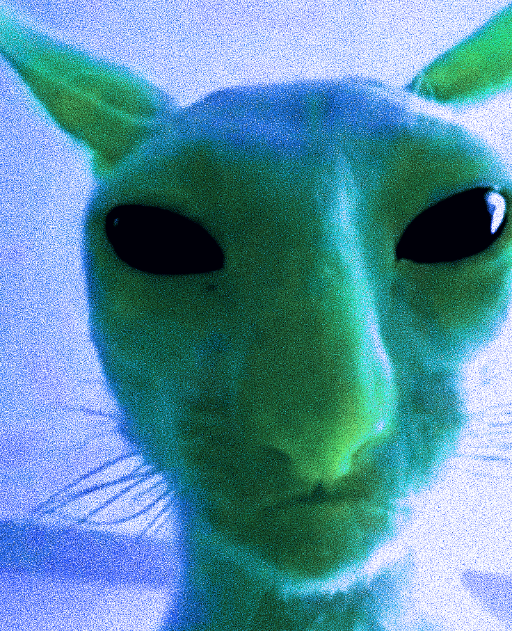
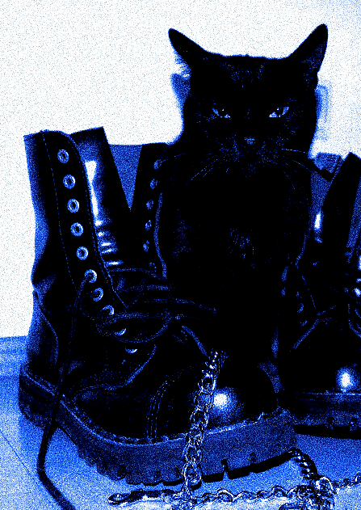

catlien
its clear your cat knows more than it lets on but how would you know for sure its an alien.the more we look into that, we realize the omission is less of them hiding and more of their disinterest in sharing. as if we’re just not worthy of knowing.  so this alien thing becomes more and more likely. and how many occasions have you wondered if you were the smarter one? if you chose this lil guy or were they simply here on a plot to outsmart you, instead. some days its clear. and the rest are a strong maybe. but theyre more than just brilliant creatures, rite. they possess these heightened senses that add to their mystique and answers of why theyre on a level of their own. the night vision, some sort of supersonic hearing, the agility, balance, and the cat-like reflexes (okay i couldve put that some other way, but it says exactly what it means). Its these abilities that enable them to navigate and interpret the world in ways that seem almost supernatural to us. born with these silent, stealthy movements the human must train and intentionally develop for. communicating in ways that can seem cryptic to humans. ranging from purrs to meows and hisses, each carry different meanings that only other cats (and some perceptive humans) fully understand. With such a complex language of sound, along with their expressive body language, it feels exactly like theyre speaking in code. and you want to know whats being said. another thing, these dudes are the epitome of cool. they have built their own molds on sense of self far beyond what most humans do in their life-time. its not at all important to them what you think. they could not care less, hold their heads high, theyll never tell you more than they want to, make you work for the affection, and “my bad” is no where in the vocab because they Meant to do it. I dont know, its like, we cant quite put our finger on it but, theyre aliens right? like theyve figured it all out on some other plane or planet so they came here for recess. to watch us squirm and struggle.
back
its clear that your cat knows more than it lets on but how would you know for sure its an alien. the more we look into that, we realize the omission is less of them hiding and more of disinterest in sharing. its like we’re just not worthy of the information. so then this alien thing becomes more and more likely. and how many occasions have you wondered if you were the smarter one? if you chose this lil guy or were they simply here on a plot to outsmart you, instead. some days its clear. the rest are a strong maybe. but theyre more than just brilliant creatures, rite. they possess these heightened senses that add to their mystique and answers of why theyre on a level of their own. the night vision, some sort of supersonic hearing, the agility, balance, and the cat-like reflexes (okay i couldve put that a better way, but it says exactly what it means). Its these abilities that enable them to navigate and interpret the world in ways that seem almost supernatural to us. born with these silent, stealthy movements the human must train and intentionally develop for. communicating in ways that can seem cryptic to humans. ranging from purrs to meows and hisses, each carry different meanings that only other cats (and some perceptive humans) fully understand. With such a complex language of sound, along with their expressive body language, it feels exactly like theyre speaking in code. and you want to know whats being said. another thing, these dudes are the epitome of cool. they have figure out sense of sense far beyond what most humans do in their life-time. its not at all important to them what you think. they could not care less, hold their heads high, theyll never tell you more than they want to, they make you work for affection, and “my bad” is no where in their vocab because they Meant to do it. I dont know, its like, we cant quite put our finger on it but, theyre aliens right? like theyve figured it all out on some other plane or planet so they came here for recess. to watch us squirm and struggle.